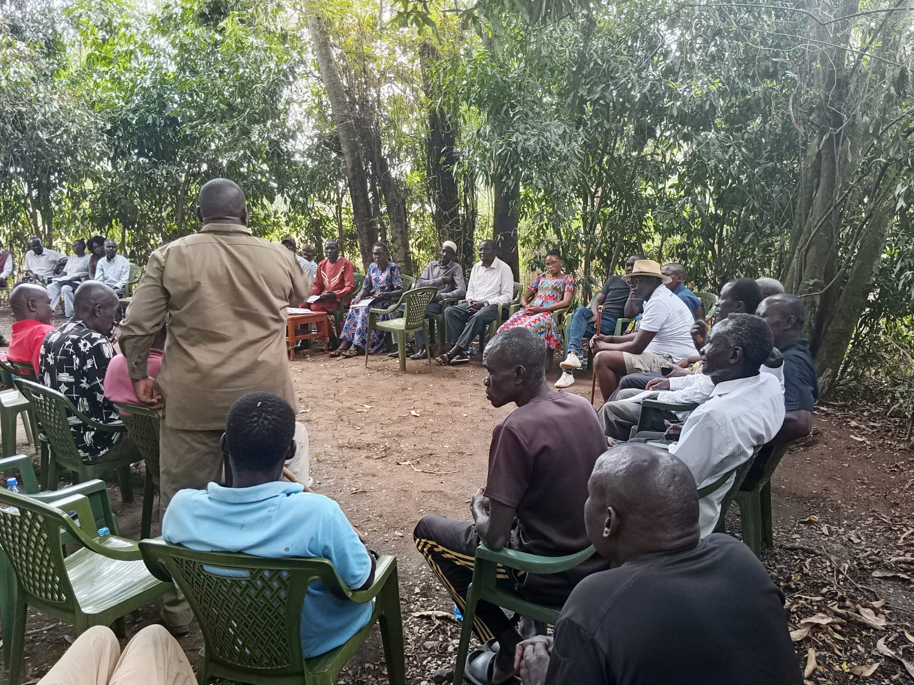
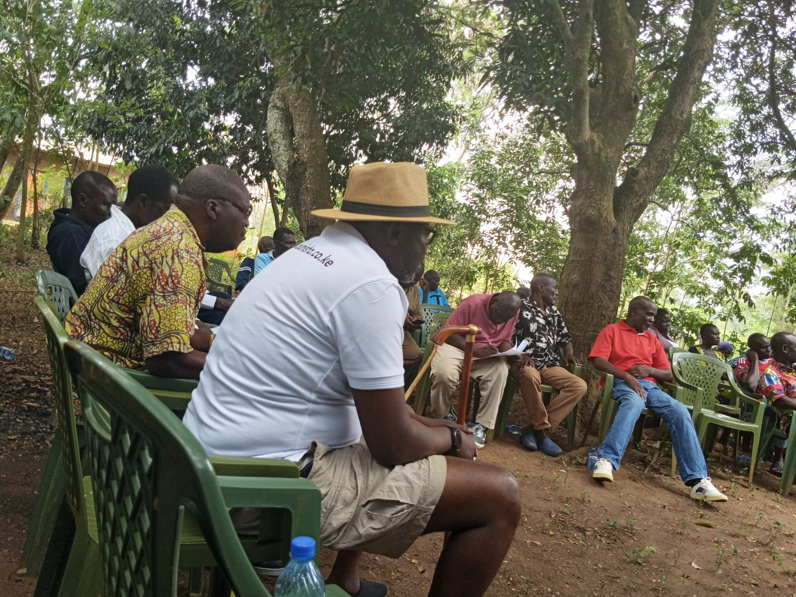

On the ground
Recent supplied engagements.
Photographs prepared for programme partners and supplementary support discussions. Exact dates, locations and partner names remain subject to team confirmation.
Foundation and programme engagements


Organisations considering programme support may request the full engagement pack and verification documents through the Foundation inbox.
Latest supplied engagement · 22 August 2026
A current community listening session.
Recent on-the-ground material supplied for campaign and supplementary-support discussions. The exact location, host and agenda remain to be confirmed.




Earlier campaign engagements


Foundation programme support and political campaign finance must remain separate. Campaign photographs do not imply that pictured people or institutions have endorsed the candidate.